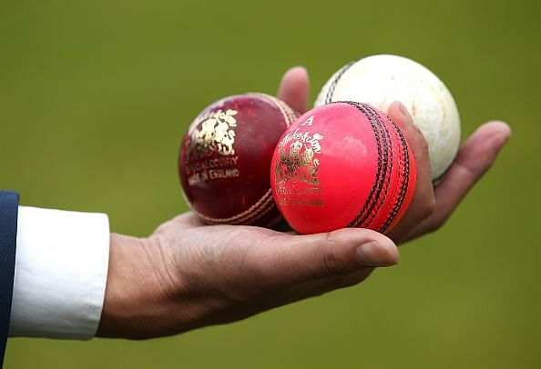
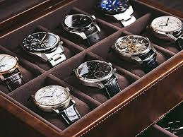

CASE STUDY BETWEEN GOOGLE LENS AND MOBILNET
GOOGEL LENS 
VS
Mobilenet
- Test Image 1 -
-
Test Image 2 -

- Test Image 3 -
- Test Image 4 - 
- Test Image 5 - 
Output on GOOGLE LENS - Water Bottle
Output on Mobilenet Model - Water Bottle
Result -
Output on GOOGLE LENS - Running shoe
Output on Mobilenet Model - Shoe
Result -
Output on GOOGLE LENS - Racecar
Output on Mobilenet Model - Ski mask
Result -
Output on GOOGLE LENS - Hand, Balls
Output on Mobilenet Model - Balls
Result -
Output on GOOGLE LENS - Wrist watch
Output on Mobilenet Model - Clock
Result -
Conclution
I have tested a total of 5 images
GOOGLE LENS has predicted 3 of them more accuratel.
So according to my case study GOOGLE LENS is more Accurate
and reliable than MobileNet which has really low accuracy!